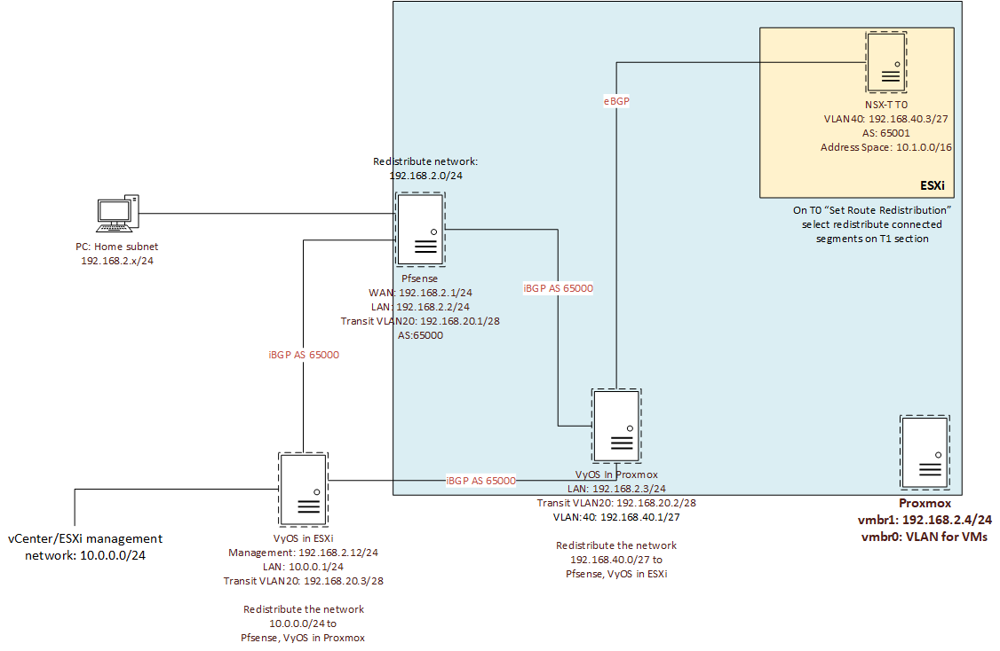

This page has the purpose to share my Home LAB BOM. vSphere is mainly used for the infrastructure management and hosting, but the environment has also other network components that allow better scalability using Proxmox.
This home lab was built to test applications, develop automation, test infrastructure components, design/implement network topologies. Besides vSphere it contains other software for backups and Windows and Linux machines.
The following image shows a generic architecture of this setup, regarding how network was designed to be more scalable:

Below is the list of software and hardware used in this setup:
List of software:
- ESXi
- vCenter
- NSX-T
- Pfsense
- VyOS
- Proxmox
List of hardware:
- 2x DELL R620
- 2x Intel Xeon E5-2670, 64GB RAM
- 2x Intel Xeon E5-2650 v2, 112GB RAM
- Mix of SAS disks in RAID5, and SSDs
- 4 port Gigabit Ethernet NIC
- Cisco Small Business SG200-26
- Fujitsu Futro S920 ThinClient
- AMD dual core 2.2Ghz, 4GB RAM
Average spent: 900€